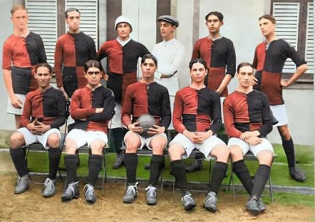
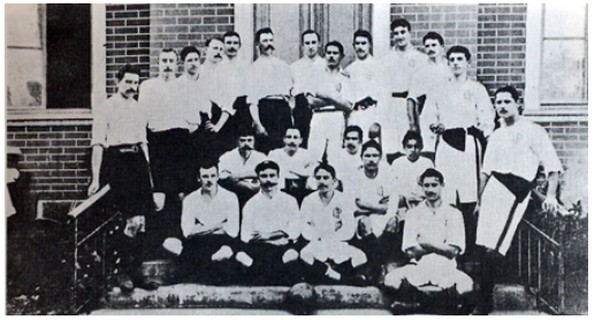

Foi o Flamengo o primeiro clube fundado no brasil

O São Paulo Athletic Club foi criado por imigrantes ingleses e inicialmente focava no críquete. Mais tarde, com Charles Miller, passou a praticar o futebol e venceu o primeiro Campeonato Paulista oficial em 1902